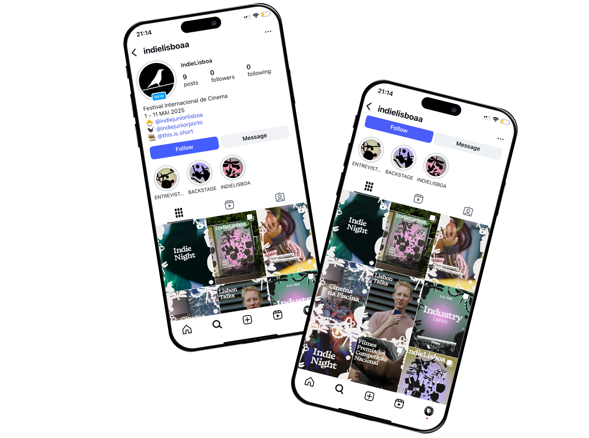
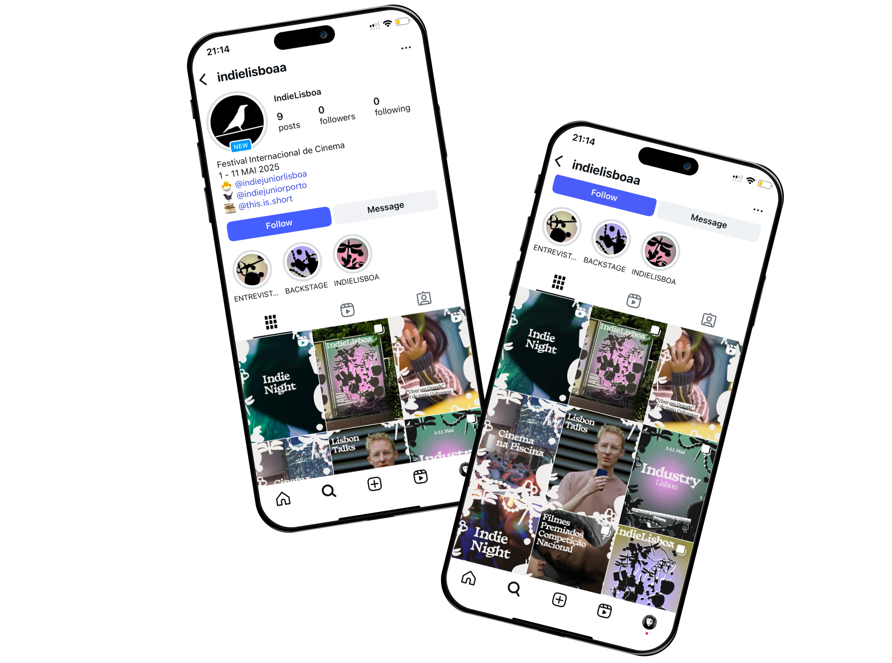

Festival IndieLisboa
This project focused on creating the full visual identity for the International Film Festival IndieLisboa. Since the crow is the symbol of the festival, I developed the concept around the idea of a crow’s nest, represented through abstract compositions of collected objects. The design stands out for being unconventional and eye-catching, while still connecting to the festival’s identity. For typography, I used Basteleur as the main typeface, combined with Ek Mukta for smaller information, ensuring both personality and readability.
Graphic Design, Digital Design
2025
 
